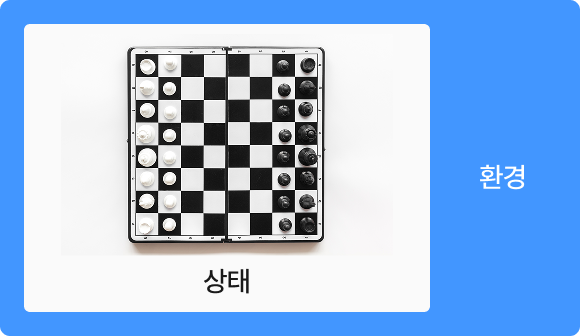

개념 학습
기계학습의 유형
강화 학습
지도학습과 비지도학습은 훈련 데이터가 주어진 정적인 환경에서 이루어진다. 반면 강화 학습은 변화하는 환경에서
에이전트가 선택할 수 있는 행동 중 가장 최대의 보상을 가져다주는 행동이 무엇인지 학습하는 것이다.
에이전트가 선택할 수 있는 행동 중 가장 최대의 보상을 가져다주는 행동이 무엇인지 학습하는 것이다.
강화 학습
특정 환경에서 어떤 행동을 했을 때 그것이 잘된 행동인지 잘못된 행동인지를 나중에 판단하고 보상(또는 벌칙)을 줌으로써 반복을 통해
보상을 최대화하는 행동 정책을 스스로 학습한다.
보상을 최대화하는 행동 정책을 스스로 학습한다.
- 에이전트
-
행동 에이전트가 선택할 수 있는 행동상태 행동 수행 후 환경의 변화보상 특정 행동 후 환경에서 제공하는 값
예) 체스에서 승리하면 +1, 패배하면 -1 -
